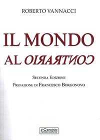
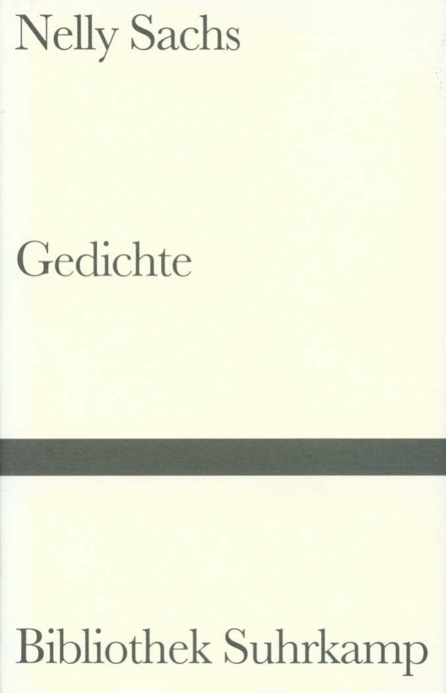
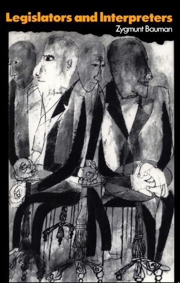

53:45 · 10 OPERE
Una comunicazione che più non comunica.
Il filo del discorso
La rinuncia a un’intervista apre una riflessione sui limiti della comunicazione pubblica: secondo il relatore, la visibilità in rete e la possibilità di intervenire non garantiscono un confronto capace di comprendere gli argomenti. Il tema dell’anonimato, illustrato con l’anello di Gige e la vignetta dei cani al computer, si intreccia alla scelta di limitare alcuni commenti e di preservare tempo per lo studio. I libri della propria biblioteca, una poesia di Nelly Sachs e il saggio di Bauman sugli intellettuali offrono immagini alternative alla circolazione di slogan. Una lunga parte centrale applica questa critica al dibattito su Israele e Palestina, alle istituzioni internazionali e al rapporto fra linguaggio e violenza. La sintesi mantiene attribuite al relatore le sue valutazioni politiche e separa gli aneddoti sanitari dalle prove di causalità. Nella conclusione, la sicurezza personale e la libertà di elaborare un pensiero autonomo vengono indicate come beni sempre più difficili da conservare: è una previsione del relatore, non un esito già dimostrato.
I libri nel discorso

La Repubblica
Identificazione probabile
Copertina: Laterza · La Repubblica · edizione con testo a fronte di riferimento
Immagine associata all’ISBN di riferimento e controllata visivamente; edizione e traduzione non identificate come quelle citate o lette nel video.
L’anello di Gige è riconoscibile nel libro II, 359d–360b; titolo non pronunciato in questo passaggio.
Passaggio 2:25 ↗ · Fonti e libro ↗
La società del contrario
Copertina: Zambon · 2005
Copertina autentica dell’edizione di riferimento, controllata visivamente. Non identifica l’esemplare letto o citato nel video.
Il proprio libro La società del contrario, del 2005, è nominato esplicitamente.
Passaggio 7:30 ↗ · Fonti e libro ↗
On the Internet, nobody knows you’re a dog
Vignetta di Peter Steiner, The New Yorker, 5 luglio 1993: Vignetta di Peter Steiner pubblicata nel New Yorker, 5 luglio 1993, p. 61, volume 69, numero 20. Riproduzione accademica del disegno con la firma e la didascalia originali, conservata sul sito MIT. Non è una copertina del periodico.
Immagine intera verificata: cane alla tastiera, secondo cane a terra, firma e didascalia. Credito Peter Steiner / The New Yorker; riproduzione accademica MIT. Il logo della testata e l’icona del telefono della pagina sono stati respinti e non sono esportati. La riformulazione orale del dialogo non è una trascrizione letterale della vignetta.
Vignetta del New Yorker con due cani al computer e la battuta sull’anonimato; autore riscontrato dalla riproduzione e dalla testimonianza di Steiner.
Passaggio 12:20 ↗ · Fonti e libro ↗
Vita di Francesco Guicciardini
Copertina: Roma, Angelo Belardetti, 1960, XII e 555 pagine, quattro tavole, secondo il catalogo Braidense. Fotografia della copertina con titolo rosso e medaglione di Guicciardini. Non si attribuiscono a questa edizione le 464 pagine della successiva Rusconi del 1982; l’esemplare del relatore non è identificato.
Immagine autentica dell’opera, controllata visivamente; l’edizione di riferimento non è attribuita al filmato.
Roberto Ridolfi e Vita di Francesco Guicciardini espliciti.
Passaggio 20:30 ↗ · Fonti e libro ↗
Il pap’occhio
Identificazione probabile
Locandina del film Il pap’occhio, 1980: Film italiano diretto da Renzo Arbore, 1980. Il 1998 nella scheda CEI riguarda la riedizione, non la produzione originale. Locandina del film con la compagnia in abiti bianchi; non è Il resto del Pap’occhio, opera distinta di materiali aggiuntivi.
Locandina autentica controllata interamente, 126 × 179 pixel: definizione limitata dichiarata, senza ingrandimenti artificiali. Titolo, personaggi e provenienza sono coerenti con il film di Arbore. Non è una copertina di libro o del film di materiali aggiuntivi.
Titolo e Arbore ricordati con esitazione: identificazione probabile del film, non verificata la scena integrale.
Passaggio 21:18 ↗ · Fonti e libro ↗
Il mondo al contrario
Copertina: Il mondo al contrario, Il Cerchio 2023, seconda edizione aggiornata, prefazione di Francesco Borgonovo, 228 pagine, in commercio dal 20 settembre 2023, ISBN 9788884746900. Copertina bianca con seconda parte del titolo capovolta. Riedizione distinta dall’originale autopubblicato discusso nel video.
Immagine autentica dell’opera, controllata visivamente; l’edizione di riferimento non è attribuita al filmato.
Il mondo al contrario di Vannacci è nominato nel confronto con il proprio titolo.
Passaggio 22:02 ↗ · Fonti e libro ↗
Bibbia
Copertina: San Paolo, 2014 · Nuova Versione dai Testi Antichi · edizione di riferimento
Genesi e giudizio sulla bontà del creato, senza una traduzione o edizione precisa.
Passaggio 23:56 ↗ · Fonti e libro ↗
Kommt einer von ferne
Identificazione probabile
Copertina della raccolta Gedichte, a cura di Hilde Domin: Poesia composta nell’aprile 1958 e pubblicata in Flucht und Verwandlung nel 1959. Immagine della raccolta Gedichte, a cura di Hilde Domin, Bibliothek Suhrkamp 549, ISBN 9783518015490, che comprende il testo. La copertina attuale del catalogo non identifica l’esemplare utilizzato nel video.
Copertina autentica della raccolta, vista interamente. Non è una edizione autonoma della poesia né la copertina originaria di Flucht und Verwandlung. Il catalogo attuale Suhrkamp e i riscontri bibliografici delle precedenti ristampe hanno cronologie differenti: non si presenta il 1999 come prima pubblicazione assoluta della raccolta.
Nelly Sachs e frammento sul venire da lontano: probabile Kommt einer von ferne; l’immagine del filo spinato non è trascritta come verso.
Passaggio 24:41 ↗ · Fonti e libro ↗
Legislators and Interpreters (La decadenza degli intellettuali. Da legislatori a interpreti)
Copertina: Opera originale del 1987. Immagine della edizione inglese in brossura, Polity, ISBN 9780745607900. I cataloghi Wiley riportano date diverse per questa ristampa: non è attribuita al filmato una data di acquisto o una specifica tiratura. La traduzione italiana di Guido Franzinetti uscì da Bollati Boringhieri nel 1992.
Immagine autentica dell’opera, controllata visivamente; l’edizione di riferimento non è attribuita al filmato.
Bauman e il passaggio da legislatori a interpreti; il termine commentatori nel parlato non è il titolo corretto.
Passaggio 41:54 ↗ · Fonti e libro ↗
Einstein: His Life and Universe
Copertina: Simon & Schuster, trade paperback, 13 maggio 2008, 704 pagine. Immagine corrente distribuita dall’editore per l’ISBN 9780743264747.
Copertina autentica con ritratto di Einstein, titolo dorato, sottotitolo bianco e fascia rossa con Walter Isaacson. L’immagine corrente richiama anche Steve Jobs fra le opere dell’autore: non si assume che ogni elemento grafico appartenesse alla prima tiratura del 2008. Non è identificata una precisa lingua o edizione nel filmato.
Biografia di Einstein scritta da Isaacson, nominata e valutata criticamente.
Passaggio 45:24 ↗ · Fonti e libro ↗